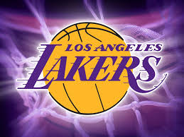

I Los Angeles Lakers sono una delle trenta squadre di pallacanestro che militano nella NBA (National Basketball Association), il campionato professionistico degli Stati Uniti d'America. I Lakers disputano le loro partite casalinghe allo Staples Center che dividono con i rivali Los Angeles Clippers e con la squadra femminile Los Angeles Sparks.
I Lakers hanno vinto complessivamente 16 titoli NBA (secondi solo ai Boston Celtics), cinque dei quali a Minneapolis prima di trasferirsi a Los Angeles nella stagione 1960-1961.
Detengono, al termine della stagione 2008-2009, il record del più alto numero di partite vinte (2.905) e il più alto numero di finali disputate (31). Detengono anche il record di vittorie consecutive per uno sport professionistico americano (ovviamente record anche NBA) pari a 33, stabilito tra il 5 novembre 1971 e il 7 gennaio 1972.
14 membri della Hall of Fame hanno indossato la maglia dei Lakers; altri quattro (John Kundla, Bill Sharman, Pat Riley e Phil Jackson) hanno allenato la squadra. 4 giocatori dei Lakers (Kareem Abdul-Jabbar, Magic Johnson, Shaquille O'Neal e Kobe Bryant) hanno vinto il premio come miglior giocatore dell'anno (MVP).
